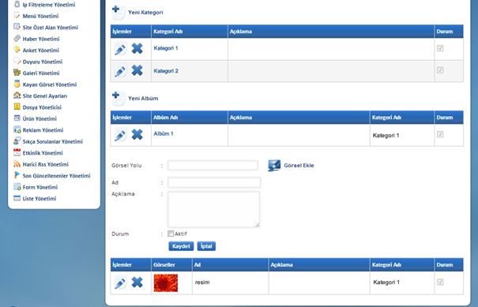

Fotograf Galeri Yönetimi:
Fotoðraflarý kategorize edip albüm oluþturulabilen alandýr.
Yeni Kategori týklandýðýnda Kategori Ýsmi, Açýklama ve Durum
seçeneklerinin olduðu alan açýlacaktýr. Bu alanlar doldurulup kayýt edildikten
sonra kategori içerisine albüm eklenebilmektedir. Yeni Albüm den Albüm
Adý, Açýklama ve Durum alanlarýnýn doldurup Kaydet denilmelidir. Bu þekilde bir
albüm oluþturulmuþ ve albüm içine fotoðraf eklenebilir hale gelmiþtir. Aþaðýda
“Kategori 1” ve “Kategori 2” þeklinde kategoriler oluþturulmuþ ve
Kategori 1 ‘in içerisinde Albüm 1 adýyla albüm oluþturulmuþtur.

Yeni Görsel Ekle Butonu Týklandýktan Sonra

Görsel Yolu: Fotoðraf adresinin eklenmesi gereken kýsýmdýr. Bu kýsýmda kolaylýk saðlanmasý amacýyla Görsel Ekle ikonu eklenmiþ olup týklandýðýnda yönetim panelinde bulunan Dosya Yöneticisi’ ndeki klasörleri küçük bir pencerede açacak ve fotoðraf seçilip çift týklandýðýnda Görsel Yolu oluþturmuþ olacaktýr.
Ad: Fotoðraf adýnýn eklendiði kýsýmdýr.
Açýklama: Fotoðrafa ait açýklamanýn girildiði kýsýmdýr. Bu kýsým sitede fotoðrafýn üzerine gelindiðinde gösterilmektedir.
Durum: Fotoðrafýn sitede albüm içerisinde gözükmesi Aktif seçeneðinin iþaretlenmesiyle saðlanýr. Eðer fotoðraf gösterilmek istenmiyor ise Aktif seçeneði iþaretlenmemelidir.